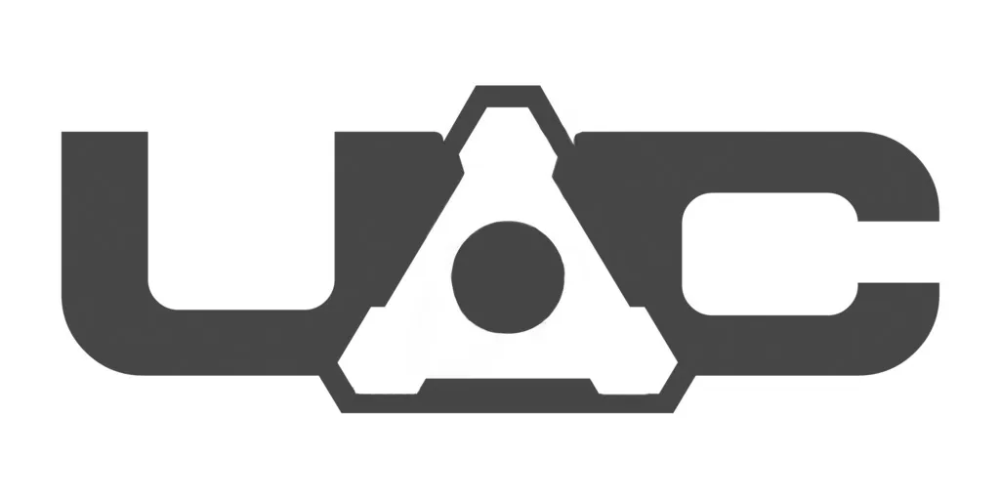
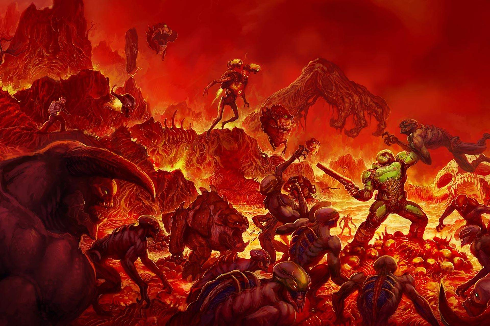

HISTORIA DE DOOM
Eres uno de los más fuertes y mejor entrenados marines de la Tierra, experimentado en combate y listo para la acción. Hace 3 años golpeaste a un oficial superior por ordenar a sus soldados disparar contra un grupo de manifestantes civiles. Considerándote como peligroso, decidieron transportarte a la base en Marte... sector espacial de la UAC (Union Aerospace Corporation) .
La UAC es una conglomeración multi-planetaria con instalaciones de desechos radioactivos en Marte y sus dos lunas, Fobos y Deimos. Tus primeros días la pasaste sentado en la sala de vigilancia, viendo videos restringidos y material ultrasecreto como si fuera TV por cable, no habiendo mucha acción allí.
Secretamente, la UAC, entre otras cosas, desarrollaba muchos proyectos militares en Marte y sus dos lunas. Una y la más problemática era la teletransportación interdimensional, pero hasta ahora solo se había podido abrir un teletransportador entre Fobos y Deimos.
Se probó a lanzar artefactos por un lado y verlos salir por el otro, pero en algún momento se necesitó de humanos para experimentar. Voluntarios militares y científicos se ofrecieron... pero al entrar por el portal comenzaron a suceder cosas desconcertantes:
o entraban y simplemente no se rematerializaban en el teletransportador de destino, o regresaban muertos con extraños síntomas en el cuerpo (mordeduras, piel seca y quemada, algunos aparecían descuartizados), o algunos llegaban completamente al borde de una esquizofrenia psicótica, cual zombies de película, masticando la mitad de sus dedos, o habiéndose tragado sus propios ojos, a la vez que otros pocos al cruzar por el teletransportador sufrían una explosión inexplicable de cuerpo completo.
El trabajo de identificar partes de cuerpos que fueran compatibles unas con otras se había convertido en una labor de 24 horas. Aparte de dichos acontecimientos, la UAC anunciaba alguno que otro retraso, pero que lo demás iba bien.
Ya habiendo pasado algún tiempo, repentinamente Marte recibió un mensaje desde Fobos "¡Requerimos de soporte militar inmediato! ¡Algo terrible y monstruoso está saliendo por los portales! ¡Los sistemas no responden! Los sistemas computarizados se han vuelto locos!" El resto era simplemente incoherente
Poco después, Deimos simplemente se desvaneció del espacio. Desde ese momento, ha habido varios intentos de establecer conexión con alguna de las lunas, sin éxito. Como último recurso, tu y tus compañeros, son enviados a Fobos para ver que es lo que está pasando. Al llegar, tu primera orden es esperar en la entrada y asegurar el perímetro mientras los demás efectivos entraban a la base llevándose las armas de alto calibre. Por muchas horas, tu radio sólo recibe sonidos de combate: disparos, hombres gritando órdenes, gritos de auxilio, algo que podría identificarse como huesos y cartílagos quebrantándose, y por fin, el espectral silencio...
Dentro de ti algo te dice que sea lo que sea que esas cosas son, saben que estas allí. Ya no hay vuelta atrás... todo depende de ti y de tu mente.
Tus compañeros están muertos. Te decides a entrar por la puerta de la base, algo no esta bien, al dar la vuelta te das cuenta de que lo que mató a tus compañeros merece más de 2 escopetazos a la cabeza...